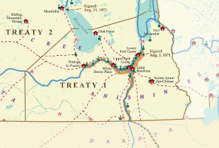

Informational website
A Solem agreement between two peoples, but its more than that. Its a living document that does and will always affect the lives of canadians as it constantly binds them in an agreement. The first treaty layed a path towards the future that we live in today and will always be remembered as a massive step towards a better more inclusive Canada.
 The first of the numbered treaty's was signed in Lower Fort Garry, on the 3rd of August 1871 between Canada, the Anishinabek and the Swampy Cree of southern Manitoba. This treaty was signed in the sprit of peace and promised the first nations people their outside promises in exchange for sharing their land.